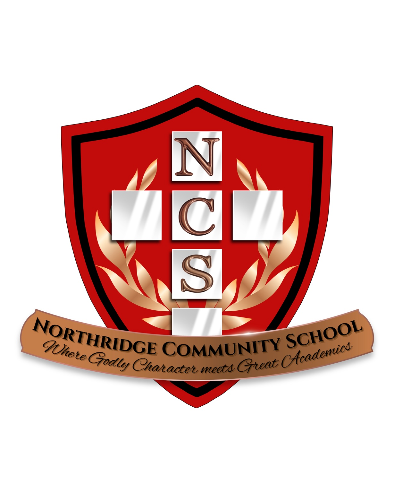

Application
Submit your family application to begin the admissions process.

Northridge Community School
A hybrid Christian school community partnering with families through campus learning, home learning, and character formation.
Apply NowStudents learn on campus three days a week and continue learning at home two days a week.
Northridge Community School exists to provide Christ-centered education in a joyful, family-focused environment. We value strong academics, godly character, and a meaningful partnership between school and home.
Apply NowSubmit your family application to begin the admissions process.
Provide a pastoral reference as part of our community partnership process.
Meet with the NCS team to discuss fit, expectations, and next steps.
Our staff is committed to nurturing students academically, spiritually, and relationally in a warm Christian learning environment.
Your generosity helps support Christ-centered education, school resources, and families in our community.